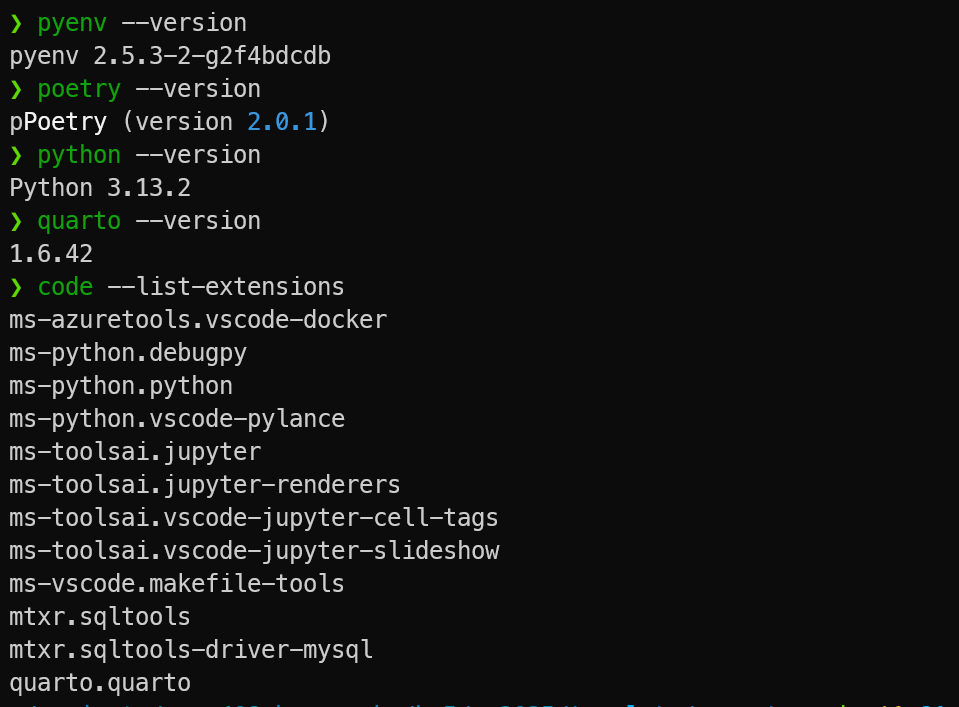
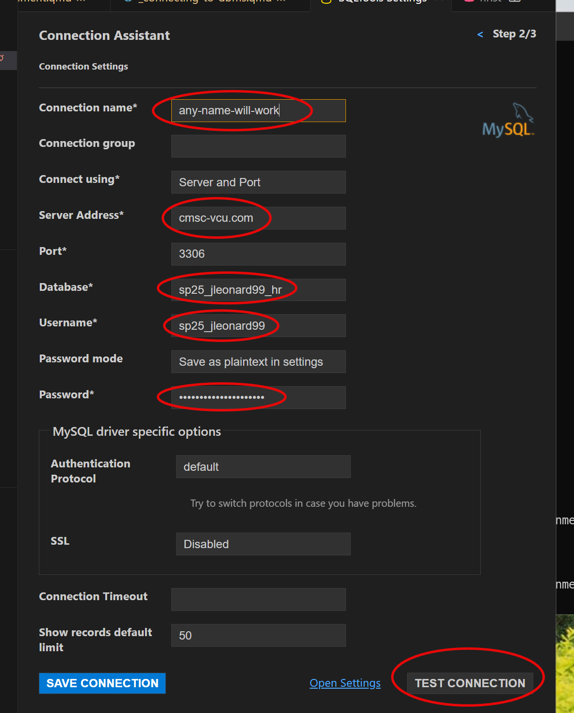
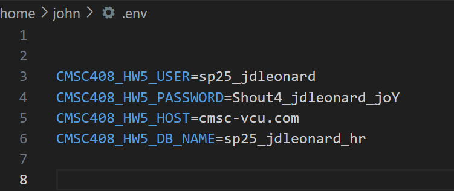

```{python}
#| eval: false
import os
import pandas as pd
from dotenv import load_dotenv
from sqlalchemy import create_engine,text
# load credentials from .env file
load_dotenv()
# store these credentials a dictionary for later reference
config = {
'user': os.getenv("CMSC408_HW5_USER"),
'password': os.getenv("CMSC408_HW5_PASSWORD"),
'host': os.getenv("CMSC408_HW5_HOST"),
'database': os.getenv("CMSC408_HW5_DB_NAME")
}
engine_uri = f"mysql+pymysql://{config['user']}:{config['password']}@{config['host']}/{config['database']}"
# create a database connection. THIS IS THE ACTUAL CONNECTION!
cnx = create_engine(engine_uri)
```SQL Selects
Lecture 16
Tuesday - Mar 18, 2025
Housekeeping
Discussion items
Practice Quiz 4 - SQL Basics - due 3/18, TUE
Discussion 4 - SQL Basics - due 3/23, SUN
Homework 5 - Getting started with SQL - due 3/23, SUN
Lecture topics
| Module | Week | Date | Day | Notes and Lectures | Activities and due dates |
|---|---|---|---|---|---|
| SQL I | 10 | 3/18 | Tue | L16:SQL Selects | PQ4:SQL Basics |
| SQL I | 10 | 3/20 | Thu | L17:SQL Toolset | |
| SQL I | 10 | 3/21 | Fri | Midterm grades due | |
| SQL I | 10 | 3/23 | Sun | HW5:Getting started with SQL; Dis4:SQL Basics | |
| SQL I | 11 | 3/25 | Tue | L18:SQL C-R-U-D | |
| SQL I | 11 | 3/27 | Thu | L19:More C-R-U-D | Q4:SQL Basics |
| SQL I | 11 | 3/28 | Fri | Last day to withdraw | |
| SQL I | 11 | 3/30 | Sun | Prj6:Docker Scaffold |
Homework 5 - Getting started
Homework 5 - getting started
Homework 5 is challenging - lots of software to install and to orchestrate!
Software to install
pyenv- manages different versions of python.poetry- manages virtual environments and morepython- installed usingpyenvquarto- adjustments for virtual environmentsVSCODE- extensions for SQL
I prepared a helper tutorial to help with the software install.

Homework 5 - verifying that your good to go
Ways to connect
- phpMyAdmin - via the web
- ssh - to a linux terminal
- vscode - using SQLTools extension
- python - using a connection
example username: sp25_jleonard99
example password: Shout4_jleonard99_joY
Homework 5 - verifying that your good to go
Ways to connect
- phpMyAdmin - via the web
- ssh - to a linux terminal
- vscode - using SQLTools extension
- python - using a connection
example username: sp25_jleonard99
example password: Shout4_jleonard99_joY

Homework 5 - verifying that your good to go
Ways to connect
- phpMyAdmin - via the web
- ssh - to a linux terminal
- vscode - using SQLTools extension
- python - using a connection
Key connection terms
- credentials
- host, username, password, database
- local database engine
- software on your machine that manages the connection through the internet to your remote server.
- query
- a command sent to the remove database server
- result set
- the package returned from the remote server. It may contain data or error information.
Homework 5 - verifying that your good to go
Ways to connect
- phpMyAdmin - via the web
- ssh - to a linux terminal
- vscode - using SQLTools extension
- python - using a connection
.env file
- stores connection information outside your repository.
- best if kept in your home directory
- can be stored in current project folder
- MUST be listed in .gitignore

Homework 5 - verifying that your good to go
Ways to connect
- phpMyAdmin - via the web
- ssh - to a linux terminal
- vscode - using SQLTools extension
- python - using a connection
Sample connection block
This single block of code general sits at the top of all your QMD files.
This block of code creates the cnx variable - the actually connection to the database.
We’ll use cnx later in the code whenever we want to talk with the DBMS.
Database connection - Imports
```{python}
#| eval: true
#| code-line-numbers: 4-7
import os
import pandas as pd
from dotenv import load_dotenv
from sqlalchemy import create_engine,text
# load credentials from .env file
load_dotenv()
# store these credentials a dictionary for later reference
config = {
'user': os.getenv("CMSC408_HW5_USER"),
'password': os.getenv("CMSC408_HW5_PASSWORD"),
'host': os.getenv("CMSC408_HW5_HOST"),
'database': os.getenv("CMSC408_HW5_DB_NAME")
}
engine_uri = f"mysql+pymysql://{config['user']}:{config['password']}@{config['host']}/{config['database']}"
# create a database connection. THIS IS THE ACTUAL CONNECTION!
cnx = create_engine(engine_uri)
```Imports
The import commands load modules into your python program.
These modules must first be installed in your virtual environment using poetry or pip to install the necessary modules. I prefer poetry!
dotenv module is used to load environment variable from disk into memory.
sqlalchemy module provides many different tools for connecting to, managing, and querying databases. sqlalchemy is known as an Object Relational Mapper or ORM. When used to it’s full extent it allows to you seamlessly load and store objects without having to think about the SQL.
But that kind of defeats the purpose for this class! So we’ll only use a few of the tools provided.
Database connection - Load .env into environment
```{python}
#| eval: true
#| code-line-numbers: 8-16
import os
import pandas as pd
from dotenv import load_dotenv
from sqlalchemy import create_engine,text
# load credentials from .env file
load_dotenv()
# store these credentials a dictionary for later reference
config = {
'user': os.getenv("CMSC408_HW5_USER"),
'password': os.getenv("CMSC408_HW5_PASSWORD"),
'host': os.getenv("CMSC408_HW5_HOST"),
'database': os.getenv("CMSC408_HW5_DB_NAME")
}
engine_uri = f"mysql+pymysql://{config['user']}:{config['password']}@{config['host']}/{config['database']}"
# create a database connection. THIS IS THE ACTUAL CONNECTION!
cnx = create_engine(engine_uri)
```Getting your connection variables.
Rather than hard-coding your database connection into your code, we’ll store the connection information on your disk and load it when your program starts.
load_dotenv() searches for a .env file and if found, loads the contents into your environment.
os.getenv() searches for a key in the environnment and if found returns it’s value.
A database connection is defined by four attributes: * Server name * Database name * Username * Password
To minimize pollution in the namespace we’ll store these four separate variables in a single dictionary for later reference.
Database connection - Create connection
```{python}
#| eval: true
#| code-line-numbers: 17-20
import os
import pandas as pd
from dotenv import load_dotenv
from sqlalchemy import create_engine,text
# load credentials from .env file
load_dotenv()
# store these credentials a dictionary for later reference
config = {
'user': os.getenv("CMSC408_HW5_USER"),
'password': os.getenv("CMSC408_HW5_PASSWORD"),
'host': os.getenv("CMSC408_HW5_HOST"),
'database': os.getenv("CMSC408_HW5_DB_NAME")
}
engine_uri = f"mysql+pymysql://{config['user']}:{config['password']}@{config['host']}/{config['database']}"
# create a database connection. THIS IS THE ACTUAL CONNECTION!
cnx = create_engine(engine_uri)
```Creating the connection
Armed with our connection varaibles we create a connection string and open a connection to the database using a local database engine.
A connection to ANY database and server starts with a connection string
Through the connection string you can customize the connection and how information passes through it.
Connection strings are used by your local database engine to locate the database host, open the appropriate port, pass credentials like username and password, and finally select the database to use.
Connection strings also manage which languages and character sets are used, sizes of transmission buffers, and more.
RTFM for your local database engine!
Getting to SELECT
Homework 5 - Making the connection
Connecting to a database
- A .env file contains key-value pairs
- The config_map maps needed keys and values.
- ANY database connection requires at least 4 values:
- username and password
- host computer name
- host database name
- other values are often used to manage connection
Helper Function
I provide a helper function create_db_wrapper to encapsulate the details.
Look in helpers.py to see the connection code. The majority of the code contains exception handling to work smoothly with Quarto.
Select statement
A SELECT query is the one of the most fundamental statements in SQL.
A SELECT statement describe a request to perform operations within the database and return a result set.
This result set is a relation.
This result can be used in subsequent operations or stored back into the DB as a new table.
A SQL query is relational algebra:
\(\Pi_{A_1, A_2, ... A_n}(\sigma_{P}(R_1 \times R_2 \times ... \times R_n) )\)
SELECT A1, A2, A3
FROM R1,R2
WHERE P
ORDER BY A2,A3,A1;
- A* represents an attribute (column), a literal, a function, or an operation
- R* represents a relation (table), cartesian project, or join
- P is a predicate, conditions or filters
SELECT clause and examples
The select clause lists the attributes desired in the result of a query, corresponds to the projection operation of the relational algebra
SQL names are case insensitive
SQL allows duplicates in relations as well as in query results
To force the elimination of duplicates, use the keyword distinct
An asterisk in the select clause denotes “all attributes”
May rename columns using alias
Regions table
Two different helper functions provided in homework 5: run_sql_and_return_df and run_sql_and_return_html.
SELECT clause and examples
Using * to select all columns
Employees table - first 15 rows
| employee_id | first_name | last_name | phone_number | hire_date | job_id | salary | commission_pct | manager_id | department_id | |
|---|---|---|---|---|---|---|---|---|---|---|
| 100 | Steven | King | SKING | 515.123.4567 | 2003-06-17 | AD_PRES | 24000.0 | NULL | NULL | 90 |
| 101 | Neena | Kochhar | NKOCHHAR | 515.123.4568 | 2005-09-21 | AD_VP | 17000.0 | NULL | 100.0 | 90 |
| 102 | Lex | De Haan | LDEHAAN | 515.123.4569 | 2001-01-13 | AD_VP | 17000.0 | NULL | 100.0 | 90 |
| 103 | Alexander | Hunold | AHUNOLD | 590.423.4567 | 2006-01-03 | IT_PROG | 9000.0 | NULL | 102.0 | 60 |
| 104 | Bruce | Ernst | BERNST | 590.423.4568 | 2007-05-21 | IT_PROG | 6000.0 | NULL | 103.0 | 60 |
| 105 | David | Austin | DAUSTIN | 590.423.4569 | 2005-06-25 | IT_PROG | 4800.0 | NULL | 103.0 | 60 |
| 106 | Valli | Pataballa | VPATABAL | 590.423.4560 | 2006-02-05 | IT_PROG | 4800.0 | NULL | 103.0 | 60 |
| 107 | Diana | Lorentz | DLORENTZ | 590.423.5567 | 2007-02-07 | IT_PROG | 4200.0 | NULL | 103.0 | 60 |
| 108 | Nancy | Greenberg | NGREENBE | 515.124.4569 | 2002-08-17 | FI_MGR | 12008.0 | NULL | 101.0 | 100 |
| 109 | Daniel | Faviet | DFAVIET | 515.124.4169 | 2002-08-16 | FI_ACCOUNT | 9000.0 | NULL | 108.0 | 100 |
| 110 | John | Chen | JCHEN | 515.124.4269 | 2005-09-28 | FI_ACCOUNT | 8200.0 | NULL | 108.0 | 100 |
| 111 | Ismael | Sciarra | ISCIARRA | 515.124.4369 | 2005-09-30 | FI_ACCOUNT | 7700.0 | NULL | 108.0 | 100 |
| 112 | Jose Manuel | Urman | JMURMAN | 515.124.4469 | 2006-03-07 | FI_ACCOUNT | 7800.0 | NULL | 108.0 | 100 |
| 113 | Luis | Popp | LPOPP | 515.124.4567 | 2007-12-07 | FI_ACCOUNT | 6900.0 | NULL | 108.0 | 100 |
| 114 | Den | Raphaely | DRAPHEAL | 515.127.4561 | 2002-12-07 | PU_MAN | 11000.0 | NULL | 100.0 | 30 |
| Total Rows: 15, Total Columns: 11 | ||||||||||
SELECT clause and examples
Gathering all last names
```{python}
#| code-line-numbers: 4-4
run_sql_and_return_html(cnx,"""
select last_name from employees
""")
```| last_name |
|---|
| Abel |
| Ande |
| Atkinson |
| Austin |
| Baer |
| Baida |
| Banda |
| Bates |
| Bell |
| Bernstein |
| Bissot |
| Bloom |
| Bull |
| Cabrio |
| Cambrault |
| Cambrault |
| Chen |
| Chung |
| Colmenares |
| Davies |
| De Haan |
| Dellinger |
| Dilly |
| Doran |
| Ernst |
| Errazuriz |
| Everett |
| Faviet |
| Fay |
| Feeney |
| Fleaur |
| Fox |
| Fripp |
| Gates |
| Gee |
| Geoni |
| Gietz |
| Grant |
| Grant |
| Greenberg |
| Greene |
| Hall |
| Hartstein |
| Higgins |
| Himuro |
| Hunold |
| Hutton |
| Johnson |
| Jones |
| Kaufling |
| Khoo |
| King |
| King |
| Kochhar |
| Kumar |
| Ladwig |
| Landry |
| Lee |
| Livingston |
| Lorentz |
| Mallin |
| Markle |
| Marlow |
| Marvins |
| Matos |
| Mavris |
| McCain |
| McEwen |
| Mikkilineni |
| Mourgos |
| Nayer |
| OConnell |
| Olsen |
| Olson |
| Ozer |
| Partners |
| Pataballa |
| Patel |
| Perkins |
| Philtanker |
| Popp |
| Rajs |
| Raphaely |
| Rogers |
| Russell |
| Sarchand |
| Sciarra |
| Seo |
| Sewall |
| Smith |
| Smith |
| Stiles |
| Sullivan |
| Sully |
| Taylor |
| Taylor |
| Tobias |
| Tucker |
| Tuvault |
| Urman |
| Vargas |
| Vishney |
| Vollman |
| Walsh |
| Weiss |
| Whalen |
| Zlotkey |
| Total Rows: 107, Total Columns: 1 |
Eliminating duplicates with DISTINCT
```{python}
#| code-line-numbers: 4-4
run_sql_and_return_html(cnx,"""
select distinct last_name from employees
""")
```| last_name |
|---|
| Abel |
| Ande |
| Atkinson |
| Austin |
| Baer |
| Baida |
| Banda |
| Bates |
| Bell |
| Bernstein |
| Bissot |
| Bloom |
| Bull |
| Cabrio |
| Cambrault |
| Chen |
| Chung |
| Colmenares |
| Davies |
| De Haan |
| Dellinger |
| Dilly |
| Doran |
| Ernst |
| Errazuriz |
| Everett |
| Faviet |
| Fay |
| Feeney |
| Fleaur |
| Fox |
| Fripp |
| Gates |
| Gee |
| Geoni |
| Gietz |
| Grant |
| Greenberg |
| Greene |
| Hall |
| Hartstein |
| Higgins |
| Himuro |
| Hunold |
| Hutton |
| Johnson |
| Jones |
| Kaufling |
| Khoo |
| King |
| Kochhar |
| Kumar |
| Ladwig |
| Landry |
| Lee |
| Livingston |
| Lorentz |
| Mallin |
| Markle |
| Marlow |
| Marvins |
| Matos |
| Mavris |
| McCain |
| McEwen |
| Mikkilineni |
| Mourgos |
| Nayer |
| OConnell |
| Olsen |
| Olson |
| Ozer |
| Partners |
| Pataballa |
| Patel |
| Perkins |
| Philtanker |
| Popp |
| Rajs |
| Raphaely |
| Rogers |
| Russell |
| Sarchand |
| Sciarra |
| Seo |
| Sewall |
| Smith |
| Stiles |
| Sullivan |
| Sully |
| Taylor |
| Tobias |
| Tucker |
| Tuvault |
| Urman |
| Vargas |
| Vishney |
| Vollman |
| Walsh |
| Weiss |
| Whalen |
| Zlotkey |
| Total Rows: 102, Total Columns: 1 |
SELECT clause and examples
Combining last and first names
```{python}
#| code-line-numbers: 4-5
run_sql_and_return_html(cnx,"""
select concat(last_name,',',first_name)
from employees
""")
```| concat(last_name,',',first_name) |
|---|
| Abel,Ellen |
| Ande,Sundar |
| Atkinson,Mozhe |
| Austin,David |
| Baer,Hermann |
| Baida,Shelli |
| Banda,Amit |
| Bates,Elizabeth |
| Bell,Sarah |
| Bernstein,David |
| Bissot,Laura |
| Bloom,Harrison |
| Bull,Alexis |
| Cabrio,Anthony |
| Cambrault,Gerald |
| Cambrault,Nanette |
| Chen,John |
| Chung,Kelly |
| Colmenares,Karen |
| Davies,Curtis |
| De Haan,Lex |
| Dellinger,Julia |
| Dilly,Jennifer |
| Doran,Louise |
| Ernst,Bruce |
| Errazuriz,Alberto |
| Everett,Britney |
| Faviet,Daniel |
| Fay,Pat |
| Feeney,Kevin |
| Fleaur,Jean |
| Fox,Tayler |
| Fripp,Adam |
| Gates,Timothy |
| Gee,Ki |
| Geoni,Girard |
| Gietz,William |
| Grant,Douglas |
| Grant,Kimberely |
| Greenberg,Nancy |
| Greene,Danielle |
| Hall,Peter |
| Hartstein,Michael |
| Higgins,Shelley |
| Himuro,Guy |
| Hunold,Alexander |
| Hutton,Alyssa |
| Johnson,Charles |
| Jones,Vance |
| Kaufling,Payam |
| Khoo,Alexander |
| King,Janette |
| King,Steven |
| Kochhar,Neena |
| Kumar,Sundita |
| Ladwig,Renske |
| Landry,James |
| Lee,David |
| Livingston,Jack |
| Lorentz,Diana |
| Mallin,Jason |
| Markle,Steven |
| Marlow,James |
| Marvins,Mattea |
| Matos,Randall |
| Mavris,Susan |
| McCain,Samuel |
| McEwen,Allan |
| Mikkilineni,Irene |
| Mourgos,Kevin |
| Nayer,Julia |
| OConnell,Donald |
| Olsen,Christopher |
| Olson,TJ |
| Ozer,Lisa |
| Partners,Karen |
| Pataballa,Valli |
| Patel,Joshua |
| Perkins,Randall |
| Philtanker,Hazel |
| Popp,Luis |
| Rajs,Trenna |
| Raphaely,Den |
| Rogers,Michael |
| Russell,John |
| Sarchand,Nandita |
| Sciarra,Ismael |
| Seo,John |
| Sewall,Sarath |
| Smith,Lindsey |
| Smith,William |
| Stiles,Stephen |
| Sullivan,Martha |
| Sully,Patrick |
| Taylor,Jonathon |
| Taylor,Winston |
| Tobias,Sigal |
| Tucker,Peter |
| Tuvault,Oliver |
| Urman,Jose Manuel |
| Vargas,Peter |
| Vishney,Clara |
| Vollman,Shanta |
| Walsh,Alana |
| Weiss,Matthew |
| Whalen,Jennifer |
| Zlotkey,Eleni |
| Total Rows: 107, Total Columns: 1 |
SELECT clause and examples
attribute can be literal or function
```{python}
#| code-line-numbers: 4-8
pd.read_sql("""
select
27 as "Literal",
now() as "Current Time"
from
dual
""",cnx)
```| Literal | Current Time | |
|---|---|---|
| 0 | 27 | 2025-03-18 16:00:17 |
Note that we’re using a built-in table named dual that returns what you put in as a table that can be used in subsequent operations.
Doing computations
The attribute can be a function or arithmetic operation
```{python}
#| code-line-numbers: 4-6
pd.read_sql("""
select concat(last_name,',',first_name) as full_name,
salary*12 as "Annual Salary"
from employees limit 5
""",cnx)
```| full_name | Annual Salary | |
|---|---|---|
| 0 | King,Steven | 288000.0 |
| 1 | Kochhar,Neena | 204000.0 |
| 2 | De Haan,Lex | 204000.0 |
| 3 | Hunold,Alexander | 108000.0 |
| 4 | Ernst,Bruce | 72000.0 |
WHERE clause and examples
The WHERE clause specifies conditions that the results must satisfy, corresponding to the \(\sigma\) predicate in relational algebra.
An individual WHERE element returns TRUE or FALSE for every row. This is applied during the query and will return only rows that evaluate TRUE in the where clause.
Attributes in where clause can be compared using relational operators: < <= = >= >
WHERE elements can be combined using AND, OR and NOT logical operators.
WHERE also uses special operators: BETWEEN, IN and IS NULL
```{python}
#| code-line-numbers: 5-10
pd.read_sql("""
-- note that this is a monthly salary!
SELECT
last_name, first_name, salary
FROM
employees
WHERE
salary > 10000
LIMIT
5
""",cnx)
```| last_name | first_name | salary | |
|---|---|---|---|
| 0 | King | Steven | 24000.0 |
| 1 | Kochhar | Neena | 17000.0 |
| 2 | De Haan | Lex | 17000.0 |
| 3 | Greenberg | Nancy | 12008.0 |
| 4 | Raphaely | Den | 11000.0 |
WHERE clause and examples
Selecting a department
```{python}
#| code-line-numbers: 4-6
pd.read_sql("""
select last_name,department_id
from employees
where department_id=110 limit 7;
""",cnx)
```| last_name | department_id | |
|---|---|---|
| 0 | Higgins | 110 |
| 1 | Gietz | 110 |
Data types matter. You’ll get an error if you set department_id=‘110’
Using BETWEEN
The attribute can be a function or arithmetic operation
```{python}
#| code-line-numbers: 4-6
pd.read_sql("""
select concat(last_name,',',first_name) as full_name, salary
from employees
where salary BETWEEN 10000 and 12000
limit 5;
""",cnx)
```| full_name | salary | |
|---|---|---|
| 0 | Raphaely,Den | 11000.0 |
| 1 | Errazuriz,Alberto | 12000.0 |
| 2 | Cambrault,Gerald | 11000.0 |
| 3 | Zlotkey,Eleni | 10500.0 |
| 4 | Tucker,Peter | 10000.0 |
WHERE clause and examples
WHERE clause and examples
Computations
Calculating commissions
What are the NaN “not a number” entries?
How do we remove the NaN (not a number) from list?
Calculating commissions
| Name | Monthly | With/Commission | |
|---|---|---|---|
| 0 | Abel,Ellen | 11000.0 | 135300.0 |
| 1 | Ande,Sundar | 6400.0 | 77440.0 |
| 2 | Atkinson,Mozhe | 2800.0 | NaN |
| 3 | Austin,David | 4800.0 | NaN |
| 4 | Baer,Hermann | 10000.0 | NaN |
| ... | ... | ... | ... |
| 102 | Vollman,Shanta | 6500.0 | NaN |
| 103 | Walsh,Alana | 3100.0 | NaN |
| 104 | Weiss,Matthew | 8000.0 | NaN |
| 105 | Whalen,Jennifer | 4400.0 | NaN |
| 106 | Zlotkey,Eleni | 10500.0 | 128100.0 |
107 rows × 3 columns
IFNULL operator
The IFNULL operator
IFNULL( expr1, expr2 ) replaces NULL with a value.
IF expr1 is NOT NULL then returns expr1
IF expr1 IS NULL, then returns expr2.
IFNULL operator
IFNULL( expr1, 0.0)
| Name | Monthly | With/Commission | |
|---|---|---|---|
| 0 | Abel,Ellen | 11000.0 | 135300.0 |
| 1 | Ande,Sundar | 6400.0 | 77440.0 |
| 2 | Atkinson,Mozhe | 2800.0 | 0.0 |
| 3 | Austin,David | 4800.0 | 0.0 |
| 4 | Baer,Hermann | 10000.0 | 0.0 |
| ... | ... | ... | ... |
| 102 | Vollman,Shanta | 6500.0 | 0.0 |
| 103 | Walsh,Alana | 3100.0 | 0.0 |
| 104 | Weiss,Matthew | 8000.0 | 0.0 |
| 105 | Whalen,Jennifer | 4400.0 | 0.0 |
| 106 | Zlotkey,Eleni | 10500.0 | 128100.0 |
107 rows × 3 columns
IFNULL( expr1, ‘missing’)
| Name | Monthly | With/Commission | |
|---|---|---|---|
| 0 | Abel,Ellen | 11000.0 | 135300.0000 |
| 1 | Ande,Sundar | 6400.0 | 77440.0000 |
| 2 | Atkinson,Mozhe | 2800.0 | missing |
| 3 | Austin,David | 4800.0 | missing |
| 4 | Baer,Hermann | 10000.0 | missing |
| ... | ... | ... | ... |
| 102 | Vollman,Shanta | 6500.0 | missing |
| 103 | Walsh,Alana | 3100.0 | missing |
| 104 | Weiss,Matthew | 8000.0 | missing |
| 105 | Whalen,Jennifer | 4400.0 | missing |
| 106 | Zlotkey,Eleni | 10500.0 | 128100.0000 |
107 rows × 3 columns
String operations
The operator LIKE uses patterns (case insensitive) (use LIKE BINARY for case sensitive) for string-matching operations using two special characters:
* percentage ( % ) matches any substring (none or many characters)
* underscore ( _ ) matches any single characterExamples:
‘Intro%’ matches any string beginning with “Intro”
‘%Comp%’ matches any string containing “Comp” as a substring
’_ _ _’ matches any string of exactly three characters
‘_ _ _ %’ matches any string of at least three characters
‘%_ a _’ same as before but the second to the last letter is ‘a’
String operations
DOUBLE %% when using Python
DOUBLE %% when using Python
```{python}
#| eval: true
#| code-line-numbers: 5-6
pd.read_sql("""
SELECT phone_number FROM employees
WHERE phone_number LIKE '%%123%%';
""",cnx)
```| phone_number | |
|---|---|
| 0 | 515.123.4567 |
| 1 | 515.123.4568 |
| 2 | 515.123.4569 |
| 3 | 650.123.1234 |
| 4 | 650.123.2234 |
| 5 | 650.123.3234 |
| 6 | 650.123.4234 |
| 7 | 650.123.5234 |
| 8 | 650.121.1234 |
| 9 | 515.123.4444 |
| 10 | 515.123.5555 |
| 11 | 603.123.6666 |
| 12 | 515.123.7777 |
| 13 | 515.123.8888 |
| 14 | 515.123.8080 |
| 15 | 515.123.8181 |
ORDER BY clause
ORDER BY is used to specify the sort order in the result set.
The result set is sorted by the first attribute listed in the ORDER BY.
If there is a tie, ORDER BY moves to the second attribute, and so on.
Attribute expression may be modified with ASC (the default) or DESC (for descending)
Attributes in ORDER BY can be computed!
Example
```{python}
#| eval: true
#| code-line-numbers: 5-10
pd.read_sql("""
select
concat(last_name,',',first_name) as "Full Name", salary as "Monthly"
from employees
order by
salary desc,
last_name, first_name
""",cnx)
```| Full Name | Monthly | |
|---|---|---|
| 0 | King,Steven | 24000.0 |
| 1 | De Haan,Lex | 17000.0 |
| 2 | Kochhar,Neena | 17000.0 |
| 3 | Russell,John | 14000.0 |
| 4 | Partners,Karen | 13500.0 |
| ... | ... | ... |
| 102 | Gee,Ki | 2400.0 |
| 103 | Landry,James | 2400.0 |
| 104 | Markle,Steven | 2200.0 |
| 105 | Philtanker,Hazel | 2200.0 |
| 106 | Olson,TJ | 2100.0 |
107 rows × 2 columns
SELECT summary
Major statement clauses
SELECT- variable to projectFROM- tables to combineWHERE- filters to applyORDER BY- order of results
Inside each clause
CONCAT- combining columnsAS- Renaming columns- Literals
- Computations in SELECT
See the MySQL SELECT documentation.
Filters and functions
WHERE- AND, OR, NOT
<<===>>
BETWEEN- for whereIN- checking set membershipNULLvaluesIFNULLoperator- String matches
%%
See the MySQL Functions documentation
Housekeeping
Discussion items
Practice Quiz 4 - SQL Basics - due 3/18, TUE
Discussion 4 - SQL Basics - due 3/23, SUN
Homework 5 - Getting started with SQL - due 3/23, SUN
Lecture topics
| Module | Week | Date | Day | Notes and Lectures | Activities and due dates |
|---|---|---|---|---|---|
| SQL I | 10 | 3/18 | Tue | L16:SQL Selects | PQ4:SQL Basics |
| SQL I | 10 | 3/20 | Thu | L17:SQL Toolset | |
| SQL I | 10 | 3/21 | Fri | Midterm grades due | |
| SQL I | 10 | 3/23 | Sun | HW5:Getting started with SQL; Dis4:SQL Basics | |
| SQL I | 11 | 3/25 | Tue | L18:SQL C-R-U-D | |
| SQL I | 11 | 3/27 | Thu | L19:More C-R-U-D | Q4:SQL Basics |
| SQL I | 11 | 3/28 | Fri | Last day to withdraw | |
| SQL I | 11 | 3/30 | Sun | Prj6:Docker Scaffold |
CMSC 408 - Databases